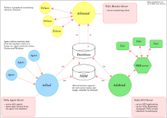

TELLU INVENTORY MANAGEMENT
Tellu inventory management software collects hardware and software information automatically from networked servers and workstations, and stores collected data in MySQL database where data is easily readable using comprehensive user interface useable by any modern web-browser. Devices - like routers and switches, peripherals - like video projectors and displays, service providers - like hosting and maintenance can also be stored in database using web-interface, called Tellu Skin.
Inventory management is only one part of Tellu's capability, Tellu offers possibility to group together workstations, servers, devices, passwords, file attachments and others to form a faction. For example, a faction can contain all the stuff for development team what they need in their development environment, like detailed server information, public passwords, support personnels contact information and file attachments, like user guides. Faction can be formed for whatever purpose where every needed item is easily reachable.
Like said, it is also possible to store passwords in database, so for example shared administrator's passwords can be reachable only by admins, confidential information is encrypted using AES-algorithm when saved in database. Also file attachments can be stored in database, for example driver programs, user guides, installation packages or even whole CD/DVD images of installation discs. Passwords and files can be marked as private when they are accessible only by owner, or public when they are accessible by all Tellu Skin users.
New Tellu Expression Language, TEL, was introduced along with Tellu release 3. With TEL it is possible to do database operations by writing simple scripts, TEL syntax is very easy to learn, especially for those who already knows some kind of programming language.
Tellu is designed as client-server model in mind. That means that each client (Agent, Telmon and Skin) needs its own server which accepts client connections and handles database and other operations transparently to the client. This model helps you to planning enterprise installations, improves security when you don't have to open database port for the world, and simplifies code updating and maintaining as database related code is needed only by the server programs. For example, switching from MySQL to PostgreSQL requires only a small changes in server side code, no updating is needed for the clients.
Tellu consists of four parts
- Agent
- inspects the machine where Agent is started, and sends collected data to the Tellu server
- written in C-language
- supported operating systems where data can be automatically collected;
- FreeBSD
- NetBSD
- OpenBSD
- Linux
- MacOSX
- Solaris/OpenSolaris
- Windows (95 -> )
- Wine (one can use Windows binary under Wine emulator)
- Server, includes three different server programs
- tellud
- receives collected machine data from the Agent and stores data in database
- keeps track for its own usage, saves error- and informational messages, whose are readable by monitoring client
- written in C-language
- telskind
- serves user interface
- handles TEL-commands
- does database maintenance (cleans expired log items, deletes temporary tags, etc.)
- keeps track for its own usage, saves error- and informational messages, whose are readable by monitoring client
- written in C-language
- telmond
- serves monitoring client
- keeps track for its own usage, saves error- and informational messages, whose are readable by monitoring client
- written in C-language
- User interface, called Tellu Skin
- user interface using by any modern web-browser
- all information gathered by the Agent is parsed in comprehensive tables
- written in Perl-language
- Telmon, the monitoring client
Tellu installation requires
Generally building Tellu servers and Agent for Unix/Linux needs GNU gcc, binutils, make, autoconf and possibly some other standard GNU tools for compiling software for Unix/Linux systems. For building Agent on Windows, you need Visual Studio or some other C-compiler and a Windows SDK. Precompiled binary for Windows 2000 and above is provided, so compiling Agent on Windows is not necessary.
General requirements:
- MySQL database server for central data storage, either local or remote from Tellu server programs point of view
- Apache web server capable of running CGI (Perl) scripts for user interface, either in same machine where Tellu server programs runs, or in dedicated server
More detailed dependencies: - POSIX compliant Unix/Linux server machine for tellud, telskind and telmond server programs
More detailed dependencies: - Unix/Linux/Windows network for Agent to collect data
More detailed dependencies for Unix/Linux: - DBus library and header files (version 1.0 or greater)
- HAL library and header files (version 0.5 or greater)
- Optionally X11-workstation for monitoring client
More detailed dependencies: - Motif libraries and header files
- X Window System libraries and header files
ITEMS COLLECTED BY THE AGENT
Tellu Agent is mainly useable under Linux (which is Tellu's primary development platform) and Windows operating environments, where Agent can collect every item listed below. Other operating environments items collected is more limited, and may or may not include network interfaces for example.
Item list collected by the Agent
- host and domain names
- operating system name, release, hardware platform and distribution package
- system manufacturer, family, product and system version
- baseboard manufacturer, product and baseboard version
- processor count, core count, speed and available cache
- total, free and cached RAM and swap memory
- device list and some info for each device
- network interfaces, their MAC, IP and broadcast addresses, interface's netmask
- storage node, mountpoint, filesystem type and mount options, capacity and available space
- installed software, package name, version, size and package's homepage
- running services and some info for each service process
- running processes and some info for each process
- running process and total thread count
- open TCP ports, port name and description
- one, five and ten minute load, uptime and idletime
TELLU INSTALLATION SCHEMA
Chart for simple installation schema. Although this schema may look a bit complex at first look, Tellu can be installed to follow this schema just in minutes. It is also possible to do a distributed installation, for example to use multiple tellud and telskind servers, one for each continent and/or network cell serving dedicated clients, where all distributed servers connects to the same central database.
;){kind=link}
Chart for simple installation schema,
1200x848, 185Kb